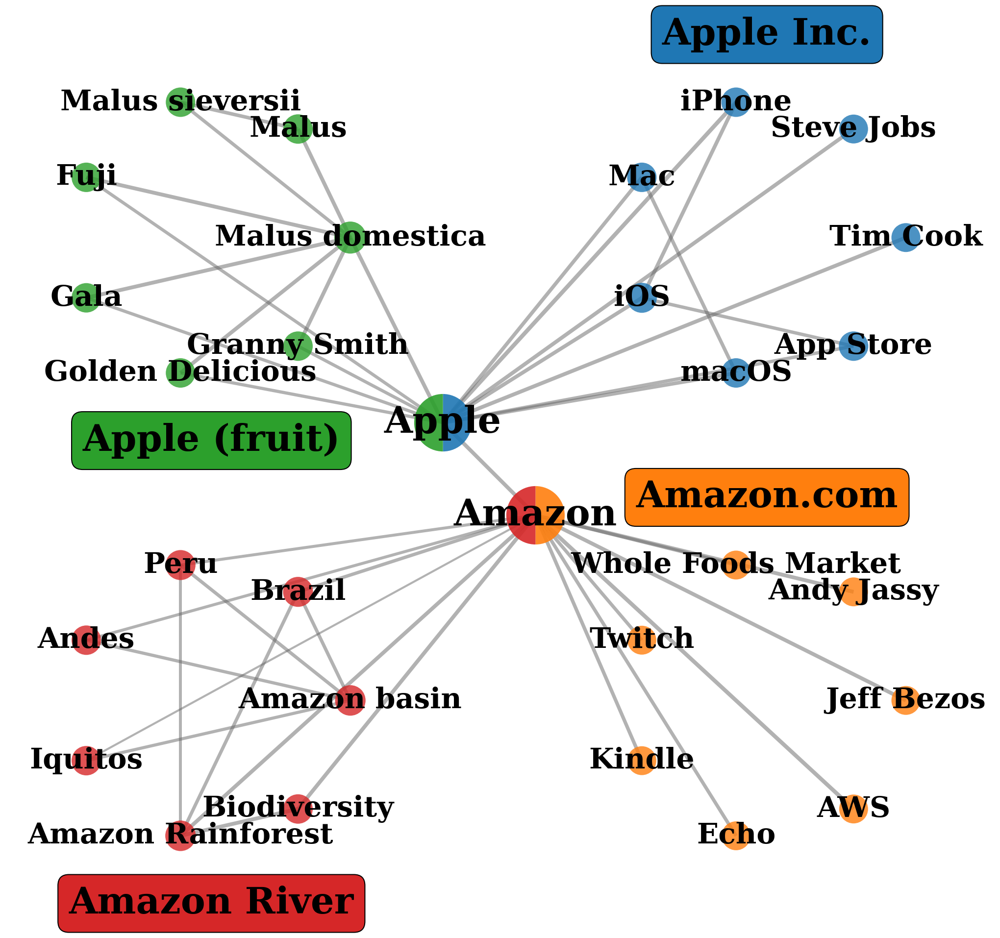
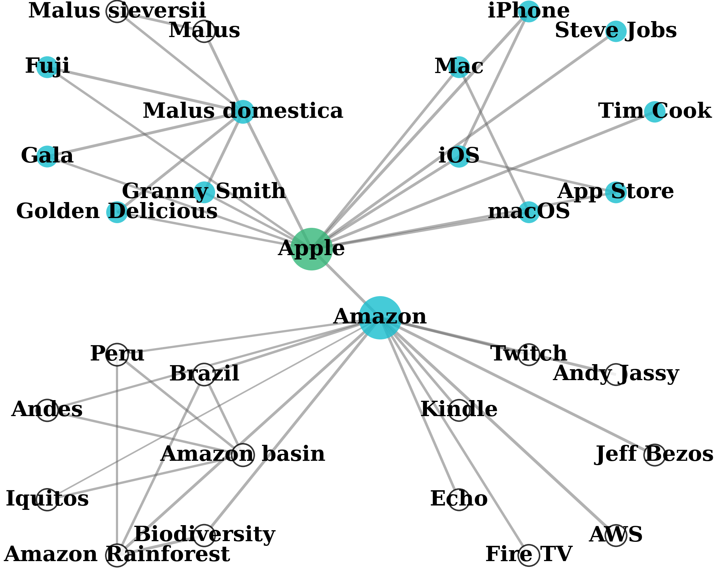
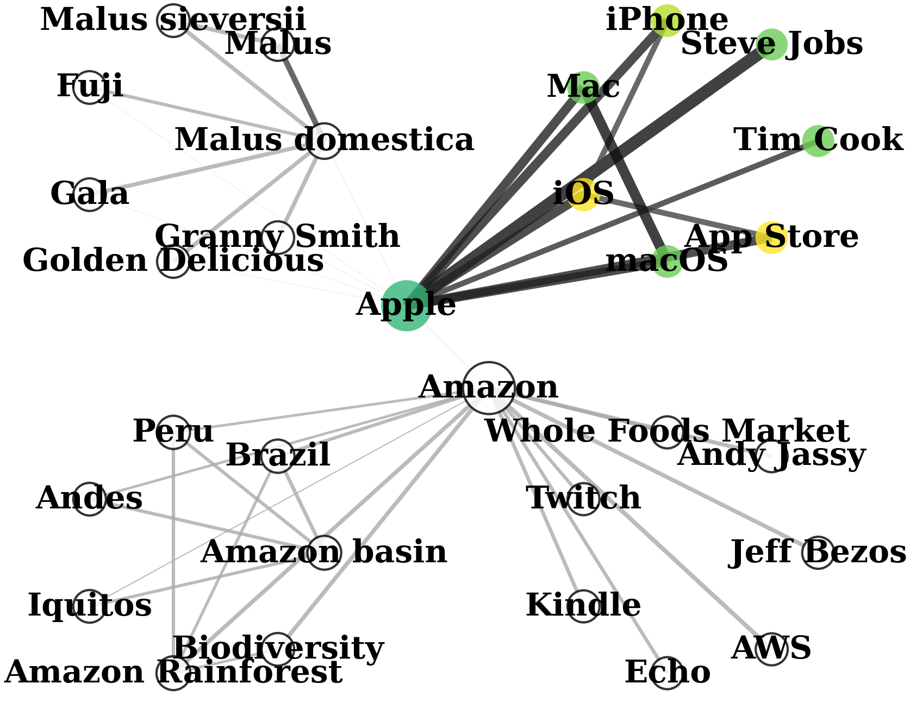

Query: “Introduce Steve Jobs’s products in Apple.”



GraphRAG retrieves entire communities, mixing relevant and irrelevant nodes. LightRAG extracts 1-hop neighborhoods without semantic alignment. QAFD-RAG reweights edges by query meaning, suppressing irrelevant clusters (Amazon River, Apple fruit) and reinforcing reasoning paths (Apple → Mac → macOS). Edge thickness reflects weight; node color indicates importance.
A two-stage pipeline from raw documents to grounded answers
Evaluated on UltraDomain QA (11 domains), multi-hop QA, text-to-SQL, and summarization. Full results in the paper.
Get running in minutes with pre-built knowledge graphs
# Option 1: Clone from HuggingFace (code + pre-built KGs)
git clone https://huggingface.co/tarzanagh/QAFD-RAG
cd QAFD-RAG
# Option 2: Clone from GitHub (code only) + download KGs
git clone https://github.com/Tarzanagh/QAFD-RAG.git
cd QAFD-RAG
huggingface-cli download tarzanagh/QAFD-RAG --include "kg/multihop/*" --local-dir .
# Install and run
pip install -r requirements.txt
export OPENAI_API_KEY="sk-..."
python benchmarks/run.py --task multihop --dataset musique --questions 10@inproceedings{zhou2026qafd,
title={Query-Aware Flow Diffusion for Graph-Based RAG with Retrieval Guarantees},
author={Zhou, Zhuoping and Ataee Tarzanagh, Davoud and Didari, Sima and Hu, Wenjun
and Gutow, Baruch and Verkholyak, Oxana and Faraki, Masoud and Hao, Heng
and Moon, Hankyu and Min, Seungjai},
booktitle={International Conference on Learning Representations (ICLR)},
year={2026}
}